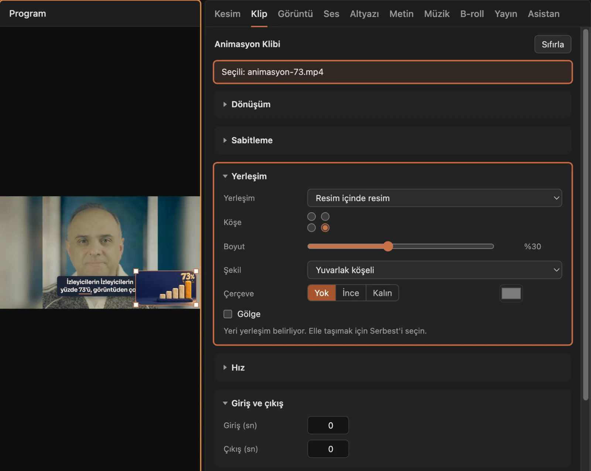

Klip
Klip sekmesi seçtiğin şeyi değiştirir: bir klibi, kaydın bir parçasını ya da kaydın tamamını. İlk satırı hangisi olduğunu söyler.

Ne seçili
- Seçili: kayıt. Ayarlar kaydın tamamını değiştirir.
- Seçili: kaydın bir parçası. Ayarlar yalnızca bu parçayı değiştirir.
- Ya da adıyla bir klip: bir animasyon, bir çekim, bir başlık. Başlıkta Metne Git yazısını ve stilini açar.
Hiçbir şey seçili değilse ayarlar kaydın tamamını değiştirir.
Bölümler
Sekme, seçtiğine uyan bölümleri gösterir:
- Dönüşüm: Opaklık (%), Boyut (%), konum, Döndürme (°) ve her kenardan kırpma. Sıfırla geri alır. Aynısı Program'da sürükleyerek de yapılır.
- Yerleşim: Serbest, Resim içinde resim ya da Bölünmüş ekran; iki klibi bir araya koymak için.
- Hız: klibin ya da parçanın hızı ve Ağır çekim türü: Kareleri tekrarla, Kareleri harmanla ya da Yeni kareler üret (dışa aktarma yavaşlar).
- Giriş ve çıkış: saniye olarak giriş ve çıkış geçişleri.
- Hareket (anahtar kare): zaman içinde boyut ve konum; Yavaşça Yakınlaş, Sola Kay gibi hazır hareketlerle. Serbest dışında bir yerleşim seçiliyken hareket kapalıdır.
- Renk: AI ile görüntü, görünümler, elle düzeltme, eğriler, tekerlekler, LUT ve skoplar (Renk).
- Yeşil perde (Yeşil perde) ve Yüzleri ve alanları bulanıklaştır (Bulanıklaştırma).
- Ses eğrisi: sesi zaman içinde açan ya da kısan noktalar. Oynatma Kafasına Nokta Ekle bir nokta ekler.
- Hazır ayarlar: Görünümü Hazır Ayar Olarak Kaydet… klibin ayarlarını başka bir klibe uygulamak üzere saklar.
Diğer anahtarlar
- Bir çekim için Titreyen görüntüyü sabitle (dışa aktarmada uygulanır), kayıt için Titreyen kaydı sabitle; ikisi de bu bilgisayarda çalışır.
- Klibin sesini kapat: görüntü kalır, ses ne oynatırken ne dışa aktarımda duyulur.
- Müzik için: Videonun Sonuna Kadar Uzat. Müzik kısaysa birleşim yerleri yumuşak tekrarlanır, uzunsa kesilir; her iki durumda sonda yavaşça kısılır.